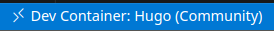

W poradniku pokazano jak wykorzystać konteneryzację i wsparcie dla niej w Visual Studio Code do realizacji statycznego serwisu WWW.
Opis obejmuje wykorzystanie kontenerów do stworzenia hermetycznego i przenośnego środowiska pracy
oraz hosting lokalny i z użyciem GitHub.
Przedstawiona metoda lokalnego hostingu umożliwia dostęp do serwisu za pomocą bezpiecznego protokołu HTTPS i umożliwia korzystanie z usług dynamicznego rozwiązywania nazw gdy adres IP zrealizowanego serwera jest zmienny.
Czynności wstępne
Praktyczna realizacja porad wymaga zainstalowania Git, Docker‘a w wersji desktop lub serwer i Code oraz posiadania kont na GitHub i opcjonalnie DuckDNS.
Przygotowanie folderu projektu
- Utwórz puste repozytorium GitHub.
Repozytorium będzie wykorzystywane do przechowywania plików generatora Hugo oraz plików źródłowych.
Jeżeli konto GitHub ma być wykorzystywane również do publikacji gotowego serwisu oraz automatycznej generacji stron po aktualizacji zawartości serwisu, to powinno być ustawione jako publiczne.
W kontach prywatnych funkcjonalności te są dostępne tylko za opłatą.
- Sklonuj repozytorium do lokalnego folderu.
Procedura klonowania zapewnia, że katalog projektu jest już w zasadzie zainicjowany jako repozytorium Git, tzn. istnieje podkatalog .git/ zawierający niezbędne metadane.
W trakcie pracy nad serwisem zawartość katalogu projektu będzie podlegała zmianom.
Utrzymanie synchronizmu z repozytorium GitHub wymaga nadążnej aktualizacji lokalnego folderu ze zmianami jakie zaszły w zdalnym repozytorium (git fetch) oraz okresowego wypychania zmian naniesionych lokalnie do zdalnego repozytorium (git stage, git commit, git push).
Działania te będą wykonywane półautomatycznie przez VS Code.
Jednak poprawne działanie klienta Git wymaga przypisania do lokalnego repozytorium pseudonimu i adresu email użytkownika, który nanosi w nim zmiany.
Dlatego w katalogu projektu po jego utworzeniu należy wydać komendy
1
2
git config user.name "your_name"
git config user.email "your_mail@somewhere.com"
- Zainstaluj kontener deweloperski zawierający gotowe środowisko pracy.
Edytor Code umożliwia korzystanie z kontenerów Docker’a zawierających gotowe i hermetyczne środowiska pracy.
Mechanizm ten nazwano DevContainers.
Code po uruchomieniu w katalogu odpowiednio skonfigurowanego projektu “wchodzi” do wnętrza kontenera, a katalog projektu jest mapowany na katalog roboczy wewnątrz kontenera.
Dla dewelopera automatycznie wszystkie narzędzia zainstalowane w kontenerze stają się dostępne.
Jednocześnie wprowadzone przez niego zmiany ograniczone są do plików projektu oraz plików kontenera, przy czym te drugie są ulotne i znikają po skasowaniu kontenera.
Tylko zmiany naniesione w katalogu roboczym mają charakter trwały.
Dla wielu typów projektów szablony środowisk pracy są już przygotowane i publicznie udostępnione.
W omawianym przypadku wykorzystamy środowisko do pracy ze statycznym generatorem stron o nazwie Hugo.
Jest to jeden z najlepszych generatorów tego typu.
W tym celu należy z podkatalogu containers/hugo repozytorium https://github.com/microsoft/vscode-dev-containers/ pobrać wraz zawartością katalog .devcontainer/ i opcjonalnie .vscode/.
Zadanie to realizuje komenda
1
curl -Ls https://github.com/microsoft/vscode-dev-containers/archive/main.tar.gz | tar -xvz --strip-components=3 --wildcards '*/*/hugo/.*'
Ze względu na niewielką liczbe importowanych plików zadanie to można wykonać “ręcznie” z użyciem przeglądarki WWW. Opisane wyżej zadania realizuje poniższy skrypt
1
2
3
4
5
6
7
8
9
10
11
12
13
#!/bin/sh
gh_user=your_gh_account
gh_repo=your_gh_repo
gh_name=your_name
gh_mail=your_mail@somewhere.com
git clone https://github.com/${gh_user}/${gh_repo}
cd ${gh_repo}
git config user.name "${gh_name}"
git config user.email "${gh_mail}"
curl -Ls https://github.com/microsoft/vscode-dev-containers/archive/main.tar.gz | tar -xvz --strip-components=3 --wildcards '*/*/hugo/.*'
Przed pierwszym uruchomieniem warto zapoznać się z treścią plików .devcontainer/devcontainer.json i .devcontainer/Dockerfile, które definiują konfigurację kontenera i przepis na jego zbudowanie.
Zmiany w pliku Dockerfile zazwyczaj nie są konieczne.
Natomiast w devcontainer.json warto ustawić wersję Hugo na extended, wersję node na najwyższą wspieraną w Dockerfile, ustawić nazwę kontenera korzystając z runArgs, poprosić o wypisanie w terminalu wersji zainstalowanych narzędzi po utworzeniu kontenera, zmienić rozszerzenie wykorzystywane do obsługi plików TOML z bungcip.better-toml na tamasfe.even-better-toml, dołożyć sprawdzanie pisowni i opcjonalnie dodać rozszerzenie do parsowania plików definiujących GitHub Actions (więcej o tym później).
Po wspomnianych modyfikacjach plik devcontainer.json przyjmie postać
1
2
3
4
5
6
7
8
9
10
11
12
13
14
15
16
17
18
19
20
21
22
23
24
25
26
27
28
29
30
31
32
{
"name": "Hugo (Community)",
"build": {
"dockerfile": "Dockerfile",
"args": {
"VARIANT": "hugo_extended",
"VERSION": "latest",
"NODE_VERSION": "18"
}
},
"runArgs": ["--name=this-is-Hugo-DevContainer"] ,
"customizations": {
"vscode": {
"settings": {
"html.format.templating": true,
"cSpell.language": "en, pl",
"cSpell.userWords": ["tutaj", "wpisz", "wyjątki", "dla", "słów", "polskich"]
},
"extensions": [
"tamasfe.even-better-toml",
"davidanson.vscode-markdownlint",
"streetsidesoftware.code-spell-checker-polish",
"GitHub.vscode-github-actions"
]
}
},
"forwardPorts": [
1313
],
"postCreateCommand": "uname -a && hugo version && node --version",
"remoteUser": "node"
}
Teraz można uruchomić Code wydając w katalogu projektu komendę
1
code .
Code “zauważy”, że istnieje podkatalog .devcontainer/ i zapyta, czy otworzyć projekt w kontenerze deweloperskim.
Należy się na to zgodzić.
Przełączenie pomiędzy pracą lokalną a kontenerem (traktowanym przez Code jak zdalna maszyna) aktywuje się za pomocą przycisku znajdującego się w lewym dolnym rogu interfejsu Code .
{kind=link}
Przygotowanie szablonu serwisu
Po uruchomieniu Code i wejściu do wnętrza kontenera (pierwsze uruchomienie nie jest natychmiastowe, gdyż kontener musi zostać zbudowany z komponentów pobieranych z sieci) należy uruchomić terminal (‘Ctrl-Shift-`’) i zainicjować pusty serwis
1
hugo new site . --force
Praca z tak przygotowanym środowiskiem wymaga znacznego nakładu pracy i znajomości zasad generacji stron oraz przygotowanie szablonów HTML, które będą wypełniane treścią podczas generacji serwisu. Na szczęście można skorzystać z szablonów serwisów przygotowanych przez ochotników i udostępnionych na https://themes.gohugo.io/themes/. W dalszej części wykorzystamy szablon Fuji. Jego instalacja sprowadza się do wydania w katalogu projektu komendy
1
git submodule add https://github.com/dsrkafuu/hugo-theme-fuji.git themes/fuji
Wszystkie prawidłowo przygotowane style serwisów zawierają gotowy przykład. Wystarczy go przenieść do budowanego serwisu, aby sprawdzić działanie przygotowanego środowiska pracy
1
cp -r themes/fuji/exampleSite/* .
Plik konfiguracyjny obecnej wersji Hugo nosi nazwę hugo.toml.
Wiele szablonów korzysta ze starszej konwencji i opiera się o plik config.toml.
Na szczęście zachowana jest kompatybilność wstecz, więc wystarczy skasować hugo.toml.
1
rm hugo.toml
Na obecnym etapie można już wygenerować serwis wydaną w terminalu komendą
1
hugo server --disableFastRender --buildDrafts
Tak uruchomiony generator będzie śledził zmiany w plikach wejściowych i “na bieżąco” generował zawartość serwisu.
Po wydaniu powyższej komendy
Code zaproponuje podgląd serwisu w przeglądarce systemowej lub wbudowanej w Code.
Więcej informacji na temat dostepnych przełączników mozna uzyskać komendą
1
hugo server --help
Przygotowanie treści serwisu
Zadaniem generatora Hugo jest przekształcenie zbioru plików wejściowych w formacie Markdown w gotowy serwis WWW.
Translacja Markdown na HTML odbywa się zgodne z szablonami zdefiniowanymi w stylu serwisu.
Hugo wymaga, aby pliki źródłowe były umieszczone w katalogu content/.
Są one pogrupowane w zależności od typu informacji zamieszczonej w serwisie.
Rodzaje publikowanych informacji są zdefiniowane w ramach stylu, natomiast prawie zawsze występuje typ post/ reprezentujący wpis blogu.
Każdy plik wejściowy jest opatrzony metadanymi zawierającymi tytuł, datę utworzenia itp.
Sposób formatowania tych metadanych zawierają pliki zaimportowane z przykładowego serwisu.
W kontekście dalszej pracy istotna jest flaga draft
---
...
draft: true
---
Pliki z tą flagą są wyłączane z zawartości serwisu przeznaczonego do publikacji. Zatem, aby uniknąć publikacji zaimportowanych przykładowych plików należy w każdym z nich ustawić tę flagę.
Kolejnym elementem, którego edycja jest niezbędna, jest plik config.toml.
Należy w nim ustawić URL pod którym będzie dostępny serwis.
Jeżeli wartość zmiennej baseURL jest ustawiona na
1
baseURL = "https://your_gh_account.github.io/gh_repo/"
to podgląd generowanych na bieżąco stron będzie dostępny pod adresem http://localhost:1313/gh_repo. Plik konfiguracyjny zawiera również wiele innych zmiennych, których nazwy i wartości silnie zależą od użytego stylu serwisu.
Ostatnim z obowiązkowych kroków jest przygotowanie nowego wpisu. Przyjmiemy konwencję, że każdy post będzie zlokalizowany w osobnym folderze. W folderze tym będą również składowane zasoby skojarzone z postem, takie jak np. grafika. Nowy post zakłada się komendą
1
hugo new post/to-moj-pierwszy-wpis/index.md
Plik index.md zawiera już niektóre metadane.
Szablon wg którego został przygotowany znajduje się w pliku archetypes/default.md.
Domyślnie plik index.md ma postać
1
2
3
4
5
---
title: "To Moj Pierwszy Wpis"
date: 2023-08-05T17:18:23Z
draft: true
---
Plik ten należy uzupełnić treścią.
Przy formatowaniu wpisu (treść, metadane) najlepiej kierować się przykładami zawartymi w szablonie serwisu.
W niektórych szablonach streszczenia nowych wpisów pojawiają się na stronie głównej serwisu.
Streszczenie oddziela się od treści głównej umieszczając w pliku wejściowym Markdown znacznik read more.
Więcej informacji nt. prawidłowego przygotowania plików dla generatora jest dostępnych na stronie projektu Hugo. Przykłady zawarte w użytym szablonie serwisu również mogą być pomocne.
Praca ze zdalnym repozytorium
Zdalne repozytorium GitHub może wykorzystać trojako: do synchronizacji katalogów roboczych na kilku różnych komputerach, do stworzenia kopii zapasowej projektu oraz do automatycznego generowania serwisu i jego publikacji. Ostatniemu zagadnieniu poświęcono osobną sekcję.
Praca z repozytorium GitHub w Code nie nastręcza żadnych trudności bowiem w edytor wbudowano odpowiednie mechanizmy.
Pliki, które zmieniono względem ostatniej synchronizacji ze zdalnym repozytorium są oznaczane literką “U”.
Aby zsynchronizować się zdalnym repozytorium należy na panelu bocznym wybrać ikonę współdzielenia.
Synchronizacja odbywa się w paczkach zwanych “Commit”.
Każdy “Commit” jest opatrzony krótkim opisem, zatem mechanizm ten umożliwia aktualizację repozytorium w sposób zorientowany problemowo.
Aby plik znalazł się w danej paczce “Commit”, musi najpierw zostać przeniesiony do poczekalni (tzw. stage).
Po wybraniu ikony współdzielenia prezentowana jest lista zmienionych plików projektu.
Z listy tej można wybrać pliki, które zostają wystawione do aktualizacji (stage).
Następnie, w górnej linii panelu bocznego należy wpisać opis paczki, a następnie wybrać “Commit”.
Paczek “Commit” można utworzyć kilka.
Aktualizację ze zdalnym repozytorium realizuje wybranie przycisku “Sync”.
Git umożliwia wyłączenie wybranych plików z mechanizmu synchronizacji.
Są one określone w pliku .gitignore, przy czym dozwolone jest stosowanie standardowych masek powłoki w postaci znaków “?” i “*”.
Typowa postać tego pliku dla repozytorium zawierające projekt statycznego serwisu Hugo ma postać
resources/_gen/*
themes/*/exampleSite/*
.vscode/
public/*
Katalog resources/ zawiera pliki pośrednie wykorzystane przez generator, natomiast katalog public/ pliki wynikowe.
Jeżeli repozytorium GitHub ma być wykorzystane do publikacji gotowego serwisu wygenerowanego lokalnie, to oczywiście katalog public/ należy usunąć z pliku .gitignore.
Publikacja serwisu
Serwis GitHub, podobnie do GitLab i kilku innych serwisów wspierających pracę grupową nad projektami, dostarcza usługi publikacji zasobów repozytorium oraz możliwość ciągłej integracji zmian i dostarczania nowych wersji oprogramowania (CI/CD).
W serwisie GitHub usługi te noszą odpowiednio nazwy GitHub Pages i GitHub Actions.
GitHub Pages polega na potraktowaniu jednego z katalogów repozytorium jako serwisu WWW i udostępnienia go pod adresem
https://your_gh_account.github.io/gh_repo/
Z kolei za pomocą GitHub Actions można skonfigurować wyzwalanie pewnych działań na zawartości serwisu gdy zostaną spełnione określone warunki, np. gdy pliki repozytorium zostaną zaktualizowane.
Pierwotnie usługi GitHub Pages i GitHub Actions funkcjonowały niezależnie.
Jednym z dostępnych działań jest możliwość opublikowania określonego folderu repozytorium jako serwisu WWW.
Obecnie GitHub Pages jest realizowana jako jedno z działań GitHub Actions, jednak, ze względów historycznych ma wydzieloną specjalną pozycję w interfejsie repozytorium.
Poza konfiguracją mechanizmu CI/CD żadna dodatkowa konfiguracja nie jest potrzebna do publikacji serwisu.
Należy jednak pamiętać, że usługi GitHub Actions i GitHub Pages są dostępne nieodpłatnie tylko dla repozytoriów publicznych.
Dalej przedstawione zostaną trzy różne scenariusze publikacji serwisu wygenerowanego przez Hugo:
- wersja A: w serwisie
GitHubupublicznione są pliki wejściowe wejściowe w formacie Markdown oraz wzorce stanowiące podstawę generacji stron HTML.GitHub Actionssą wykorzystywane do wygenerowania i opublikowania nowej wersji serwisu. - wersja B: w serwisie
GitHubupublicznione są tylko pliki wynikowe, tj. zawartość wygenerowanego serwisu.GitHub Actionssą wykorzystywane do jego publikacji. - wersja C: repozytorium
GitHubjest wykorzystywane tylko do przechowywania plików wejściowych generatora i nie musi być upublicznione. Generacja zawartości zawartości serwisu i jej upublicznienie wykorzystuje lokalne zasoby użytkownika.
A. GitHub Actions
Do publikacji serwisu zostanie wykorzystany automatyczne działanie, przy czym interfejs do jego konfiguracji znajduje się w menu Pages
https://github.com/${gh_user}/${gh_repo}/settings/pages
Jednak, aby publikacja się udała, w repozytorium musi istnieć gałąź Git o nazwie gh-pages.
Można ją utworzyć w serwisie GitHub wybierając na stronie głównej repozytorium przycisk Branches i dodać wspomnianą gałąź.
Dopiero teraz w menu Pages jako metodę publikacji należy wybrać GitHub Actions przy użyciu akcji Hugo.
Takie działanie spowoduje powstanie w katalogu .github/workflows pliku hugo.yml o treści
1
2
3
4
5
6
7
8
9
10
11
12
13
14
15
16
17
18
19
20
21
22
23
24
25
26
27
28
29
30
31
32
33
34
35
36
37
38
39
40
41
42
43
44
45
46
47
48
49
50
51
52
53
54
55
56
57
58
59
60
61
name: Deploy Hugo site to Pages
on:
push:
branches: ["main"]
workflow_dispatch:
permissions:
contents: read
pages: write
id-token: write
concurrency:
group: "pages"
cancel-in-progress: false
defaults:
run:
shell: bash
jobs:
# Build job
build:
runs-on: ubuntu-latest
env:
HUGO_VERSION: 0.114.0
steps:
- name: Install Hugo CLI
run: |
wget -O $/hugo.deb https://github.com/gohugoio/hugo/releases/download/v${HUGO_VERSION}/hugo_extended_${HUGO_VERSION}_linux-amd64.deb \
&& sudo dpkg -i $/hugo.deb
- name: Install Dart Sass
run: sudo snap install dart-sass
- name: Checkout
uses: actions/checkout@v3
with:
submodules: recursive
- name: Setup Pages
id: pages
uses: actions/configure-pages@v3
- name: Install Node.js dependencies
run: "[[ -f package-lock.json || -f npm-shrinkwrap.json ]] && npm ci || true"
- name: Build with Hugo
env:
# For maximum backward compatibility with Hugo modules
HUGO_ENVIRONMENT: production
HUGO_ENV: production
run: |
hugo \
--minify \
--baseURL "$/"
- name: Upload artifact
uses: actions/upload-pages-artifact@v2
with:
path: ./public
# Deployment job
deploy:
environment:
name: github-pages
url: $
runs-on: ubuntu-latest
needs: build
steps:
- name: Deploy to GitHub Pages
id: deployment
uses: actions/deploy-pages@v2
Sekcja on: tego pliku definiuje jakie zdarzenia aktywują akcję.
W zamieszczonym przykładzie skonfigurowano dwa takie zdarzenia: aktualizacja gałęzi main (opcja push:) oraz manualną aktywację (workflow_dispatch:) za pomocą interfejsu serwisu GitHub.
Późniejsza zmiana metody publikacji zawartości repozytorium wymaga wcześniejszego całkowitego wyłączenia publikowania (unpublish).
Biorąc pod uwagę, że skonfigurowana akcja zapewnia generację plików HTML, to synchronizacja plików z podkatalogu public nie jest konieczna.
W tak skonfigurowanym repozytorium każdorazowa zmiana plików wejściowych powoduje zbudowanie serwisu.
Takie postępowanie nie jest zbyt eleganckie, bowiem wiele z tych wywołań jest po prostu niepotrzebnych.
Rozwiązaniem sytuacji jest utworzenie gałęzi devel i praca nad serwisem z jej wykorzystaniem.
Do jej utworzenia można wykorzystać Code.
Po wybraniu ikony synchronizacji wybieramy ... przy nazwie repozytorium, a następnie Branch-> Create Branch i wpisujemy devel.
Teraz utworzoną gałąź publikujemy (...->Branch->Publish Branch), co zapewni, że zostanie ona przeniesiona do drzewa Git znajdującego się w repozytorium GitHub.
Synchronizacja z repozytorium GitHub jest “bezkosztowa” gdyż zgodnie z konfiguracją tylko zmiany w gałęzi main włączają budowę serwisu.
Dopiero gdy określony etap pracy zostanie osiągnięty, wtedy należy przełączyć się na gałąź main, włączyć do niej zmiany z gałęzi devel i zsynchronizować GitHub.
Wtedy synchronizacja z serwisem GitHub spowoduje zbudowanie serwisu na mocy konfiguracji dyrektywy on:.
Po wykonaniu synchronizacji aktywną gałąź w lokalnym repozytorium znowu należy przełączyć na devel.
Zaletą przedstawionej konfiguracji jest możliwość aktualizacji zawartości serwisu z dowolnego miejsca za pomocą przeglądarki internetowej z wykorzystaniem natywnego interfejsu usługi GitHub lub https://vscode.dev/.
B. GitHub Pages
Może się zdarzyć, że jesteśmy zainteresowani tylko publikacją gotowego serwisu bez upubliczniania postaci źródłowej publikowanych stron. Idea takiej realizacji serwisu polega na utworzeniu w serwisie GitHub dwóch repozytoriów:
- prywatnego, nie korzystającego z
GitHub ActionsczyGitHub Pagesi zawierającego tylko pliki źródłowe wykorzystywane w procesie generacji, - publicznego. korzystającego z powyższych udogodnień i zawierającego tylko pliki wynikowe.
Adaptacja poprzedniej konfiguracji do takiego wymogu jest stosunkowo prosta, należy jedynie pamiętać, że
generator Hugo umieszcza pliki wynikowe w podkatalogu public:
- w usłudze
GitHubrepozytorium przechowujące pliki źródłowe przekształcamy w prywatne, - w usłudze
GitHubzakładamy nowe repozytorium, dalej będziemy się do niego odwoływać jakoyour_hugo_site, -
w lokalnym repozytorium czyścimy podkatalog
public(znaczek*jest ważny):1
rm -rf public/*
a następnie podpinamy do niego nowo utworzone repozytorium
1
git submodule add https://github.com/${gh-user}/your_hugo_site public/
Code zauważy zmianę i dopasuje swój interfejs tak aby umożliwić pracę z dwoma repozytoriami jednocześnie.
Publikacja wymaga istnienia w repozytorium gałęzi gh-pages.
Można ją utworzyć w serwisie GitHub wybierając na stronie głównej repozytorium przycisk Branches.
Po wybraniu ikony synchronizacji wybieramy ... przy nazwie repozytorium , a następnie Branch-> Create Branch i wpisujemy gh-pages.
Teraz w nowym repozytorium wystarczy aktywować mechanizm GitHub Pages.
https://github.com/${gh_user}/${gh_repo}/settings/pages
Tym razem należy wybrać działanie Static HTML (Build and deployment->GitHub Actions).
Taki wybór spowoduje, że w repozytorium your_hugo_site zostanie utworzone działanie .github/workflows/static.yml
Domyślnie akcja publikacji dotyczy zawartości całego repozytorium, nie trzeba zatem nic zmieniać.
1
2
3
4
5
6
7
8
9
10
11
12
13
14
15
16
17
18
19
20
21
22
23
24
25
26
27
28
29
30
31
name: Deploy static content to Pages
on:
push:
branches: ["main"]
workflow_dispatch:
permissions:
contents: read
pages: write
id-token: write
concurrency:
group: "pages"
cancel-in-progress: false
jobs:
deploy:
environment:
name: github-pages
url: $
runs-on: ubuntu-latest
steps:
- name: Checkout
uses: actions/checkout@v3
- name: Setup Pages
uses: actions/configure-pages@v3
- name: Upload artifact
uses: actions/upload-pages-artifact@v2
with:
# Upload only 'public/' folder
path: '.'
- name: Deploy to GitHub Pages
id: deployment
uses: actions/deploy-pages@v2
Praca w tak przygotowanym środowisku przebiega wg następującego cyklu:
- Korzystając z
Codetworzymy lokalnie nową zawartość serwisu. Podgląd on-line pozwala na ocenę, czy nowo utworzone treści nadają się do publikacji. Gdy to jest konieczne wykonujemy synchronizację z repozytorium prywatnym. -
Gdy tak jest, w gotowych do publikacji materiałach ustawiamy
draft: falsei generujemy nową postać serwisu komendą1
hugo --minify - Takie działanie spowoduje aktualizację zawartości katalogu
public/i konieczność synchronizacji ze zdalnym repozytorium. Po jej wykonaniu skonfigurowana akcjaGitHubautomatycznie opublikuje nową postać serwisu. Należy jedynie pamiętać, że wykonywanie akcji może nie być natychmiastowe i może chwilę potrwać.
W przedstawionej konfiguracji można zachować prywatność danych wejściowych. Ceną jest komplikacja schematu pracy nad serwisem.
C. Własny hosting serwisu
W niniejszym punkcie opisano działania niezbędne do lokalnego hostingu tworzonego serwisu.
Do jego realizacji potrzebna będzie maszyna z publicznym (routowalnym) adresem IP. Nie ma wymogu aby adres ten był stały. Maszyna musi mieć skonfigurowany dostęp za pomocą protokołu SSH.
Do hostingu wykorzystane zostaną kontenery Docker, zatem również konieczna jest instalacja tego serwera na maszynie publikującej serwis WWW.
Nic nie stoi na przeszkodzie, aby maszyna wykorzystana do publikacji była zrealizowana jako wirtualny host w chmurze.
Serwis WWW musi mieć swoją nazwę, zatem należy wykupić domenę lub skorzystać z darmowych odmian dynamicznych serwisów DNS do skojarzenia nazwy serwisu z adresem IP maszyny udostępniającej serwis.
W prezentowanym dalej przykładzie zostanie wykorzystana usługa DuckDNS.
Do realizacji lokalnego hostingu jakiekolwiek serwisu niezbędny jest routowalny (publiczny) adres IP.
W omawianej konfiguracji przyjęto założenie, że adres ten jest przypisany do routera z usługą NAT, natomiast host realizujący serwis znajduje się w sieci lokalnej “schowanej” za routerem i korzystającej nieroutowalnych (prywatnych) adresów IP.
Przyjęto również założenie, że host, na którym rozwijany jest serwis i na którym zainstalowano Code, znajduje się w tej samej sieci co host z serwisem WWW.
Na hoście z serwisem WWW działa serwer SSH.
Do publicznego adresu IP musi być przypisana kwalifikowana domenowa nazwa hosta (FQDN) w formacie nazwa.serwisu.moja.domena.org.
Jeżeli adres IP jest stały, to wystarczy wykupić dla niego domenę.
Dla adresów zmiennych konieczne jest skorzystanie z usługi dynamicznego DNS.
Idea działania takiej usługi polega na tym, że host o zmiennym adresie IP otrzymuje identyfikator unikalny w ramach dynamicznego serwisu DNS i co pewien czas “melduje” swój adres IP.
Usługa dynamicznego DNS rozpowszechnia tę informację, komunikując się z innymi serwisami DNS, które aktualizują swoją konfigurację.
Oczywiście, dla stałych adresów IP skorzystanie z usługi dynamicznego DNS do uzyskania nazwy domenowej jest również możliwe.
Darmowe usługi dynamicznego DNS pozwalają zazwyczaj tylko na określenie nazwy hosta, a domenowa część nazwy jest zadana przez dostawcę serwisu.
Zaproponowana konfiguracja hosta realizującego serwis pozwala na prowadzenie wielu serwisów WWW na tym samym adresie IP, jednak o różnych nazwach domenowych.
Oczywiście nic nie stoi na przeszkodzie, aby do tego samego numeru IP przypisać wiele nazw domenowych.
Dalej do skojarzenia adresu IP z nazwą domenową wykorzystany darmowy serwis https://duckdns.org.
W serwisie należy założyć konto.
W ramach każdego konta można nieodpłatnie założyć kilka domen (wraz z subdomenami).
Każdy użytkownik serwisu ma przypisany unikalny token, który jest wykorzystywany do aktualizacji zmiennego adresu IP.
Na hoście, który ma utrzymywać serwis www konieczna jest instalacja serwera Dockera.
Użytkownik zdalnego hosta powinien być dodany do grupy docker, co uwolnia od konieczności pracy z Dockerem na prawach administratora.
1
sudo usermod -aG docker ${USER}
Aby powyższa zmiana odniosła skutek, należy się wylogować i zalogować lub w otwartych sesjach wydać komendę
1
newgrp docker
W zdalnym zarządzaniu kontenerami dobrze spisuje się Portainer.
Uboższa jego wersja jest dostępna nieodpłatnie.
Instalacja sprowadza się do dwóch komend
1
2
docker volume create portainer_data
docker run -d -p 8000:8000 -p 9000:9000 --name portainer --restart=always -v /var/run/docker.sock:/var/run/docker.sock -v portainer_data:/data portainer/portainer-ce:latest
Od teraz zainstalowanymi obrazami i kontenerami można zarządzać łącząc się przeglądarką przy użyciu protokołu HTTP z portem 9000 hosta z Portainerem.
Instalacja własnego serwisu WWW jest bardzo prosta.
Do katalogu services hosta
1
2
mkdir -p /home/your_host_account/services/
cd /home/your_host_account/services/
wgrywamy plik docker-compose.yml o następującej treści
1
2
3
4
5
6
7
8
9
10
11
12
13
14
15
16
17
18
19
20
21
22
23
24
25
26
27
28
29
30
31
32
33
34
35
36
37
38
39
40
41
42
43
44
45
46
47
48
49
50
51
52
53
54
55
56
57
58
59
60
61
version: "3"
networks:
frontend:
name: dmz
services:
duckdns:
image: lscr.io/linuxserver/duckdns:latest
container_name: dmz-duckdns
environment:
- PUID=1000 #optional
- PGID=1000 #optional
- TZ=Europe/Warsaw
- SUBDOMAINS=misiek,kociak
- TOKEN=xxxxxxxx-yyyy-zzzz-aaaa-bbbbbbbbbbbb
- LOG_FILE=true #optional
volumes:
- /home/your_host_account/services/duckdns:/config #optional
networks:
- frontend
restart: unless-stopped
nginxproxy:
image: 'jc21/nginx-proxy-manager:latest'
container_name: dmz-nginxproxy
restart: unless-stopped
ports:
- '8888:80'
- '81:81'
- '4443:443'
volumes:
- /home/your_host_account/services/npm/data:/data
- /home/your_host_account/services/npm/letsencrypt:/etc/letsencrypt
networks:
- frontend
www0:
image: lscr.io/linuxserver/nginx:latest
container_name: dmz-www0
environment:
- PUID=1000
- PGID=1000
- TZ=Europe/London
volumes:
- /home/your_host_account/services/www0:/config
restart: unless-stopped
networks:
- frontend
www1:
image: lscr.io/linuxserver/nginx:latest
container_name: dmz-www1
environment:
- PUID=1000
- PGID=1000
- TZ=Europe/London
volumes:
- /home/your_host_account/services/www1:/config
restart: unless-stopped
networks:
- frontend
Następnie należy utworzyć puste katalogi, w których będą przechowywane dane z kontenerów
1
mkdir -p {duckdns,npm/data,npm/letsencrypt,www0,www1}
Ostateczne uruchomienie stosu usług realizuje komenda
1
docker compose up -d
wydana w katalogu z plikiem docker-compose.yml.
Kontener duckdns odpowiada za aktualizację adresu IP serwisu w usłudze dynamicznego DNS.
Kontener nginx-proxy-manager realizuje reverse-proxy, za którym schowane są serwisy www0 i www1.
Kontener ten również troszczy się o utrzymanie aktualnego certyfikatu dla domen skonfigurowanych w ramach proxy.
Zarządzanie proxy (i domenami) realizuje się za pomocą interfejsu WWW dostępnego na porcie 81.
Interfejsy http i https zarządzanych usług dostępne są odpowiednio na portach 8888 i 4443 dlatego na routerze realizującym NAT należy uaktywnić Port Forwarding i zrealizować przypisanie “80->ip_host:8888”, “443->ip_host:4443”.
W ten sposób ruch docierający do routera i skojarzony z protokołami http i https zostanie przekierowany do usługi proxy, a ta, na podstawie nazwy domenowej, podejmie decyzję do którego serwisu WWW ruch powinien być skierowany.
Wspomniane przekierowanie portów w routerze musi być wykonane przed konfiguracją proxy, bowiem są one wykorzystywane do komunikacji z serwisem LetsEncrypt w celu uzyskania certyfikatów SSL.
Konfiguracja Nginx Proxy Manager jest stosunkowo prosta.
Pierwsze łączenie z interfejsem administracyjnym (port 81) wymaga zmiany hasła i nazwy użytkownika (domyślnymi wartościami są admin i changeme).
Konfigurację rozpoczynamy od uzyskania certyfikatów dla skonfigurowanych domen (Dashboard->SSL Certificates).
Następnie dodajemy Proxy Hosts. Jako nazwę Forward Hostname należy podać nazwę kontenera,czyli w rozważanym przypadku dmz-www0 lub dmz-www1.
Środowisko do prezentacji zawartości serwisu jest już przygotowane.
Należy jedynie pamiętać, aby w konfiguracji Hugo (config.toml) również ustawić nazwę skonfigurowaną w DuckDNS.
Serwis generuje się jak zwykle, zatrzymując serwer i wydając w katalogu projektu komendę
1
2
hugo
Wystarczy teraz przesłać zawartość katalogu public/ do katalogu głównego serwera WWW tj.
1
scp -r public/* user@ip_host_lan:/home/your_host_account/services/www1/www/
i serwis jest opublikowany.
Podsumowanie
Przedstawione scenariusze wykorzystania Code do pracy nad serwisem WWW nie wyczerpują wszystkich możliwości.
Bezpośrednia praca nad plikami zapisanymi w zdalnym repozytorium GitHub jest możliwa tylko przy użyciu przeglądarki.
Interfejs imitujący Code i zapewniający nieco zubożoną funkcjonalność jest dostepny pod adresem https://vscode.dev.
Jedną z takich brakujących funkcjonalności jest praca we własnym kontenerze.
Jednak nie oznacza to, że jest to niemożliwe.
Wystarczy sobie uświadomić, że kontenery Docker‘a traktowane są jak zdalne maszyny.
W ramach usługi GitHub można do tego wykorzystać funkcję Codespaces dostępną w głównym menu użytkownika.
Usługa to pozwala na utworzenie w chmurze wirtualnych maszyn na których uruchomione jest to samo oprogramowanie które umożliwiają komunikację z kontenerem.
Jako interfejs użytkownika jest wykorzystywany https://vscode.dev, co oznacza, że do pracy z taką zdalną maszyną wystarczy przeglądarka.
Należy jednak pamiętać, że Codespaces nie są całkowicie bezpłatne.
Istnieją limity zasobów, które można w zadanym okresie czasu wykorzystać za darmo.
Potrzeby powyżej limitów określonych przez dostawcę usługi wymagają wniesienia opłat.